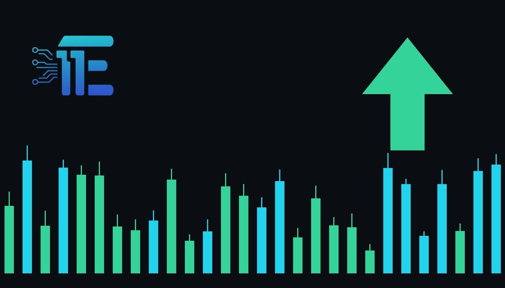

Russia-Ukraine Security Talks Conclude in Abu Dhabi Without Breakthroughកិច្ចចរចាសន្តិសុខរុស្ស៊ីនិងអ៊ុយក្រែននៅ Abu Dhabi បញ្ចប់ដោយគ្មានចំណុចរបត់ថ្មី
XAU/USD impact: ▲ Bullishផលប៉ះពាល់លើ XAU/USD: ▲ ឡើង

Talks between Russia and Ukraine in Abu Dhabi ended without a breakthrough ahead of US meetings with Putin and Zelensky. Ongoing geopolitical uncertainty keeps safe-haven demand in focus for gold traders.
កិច្ចចរចារវាងរុស្ស៊ីនិងអ៊ុយក្រែននៅ Abu Dhabi បានបញ្ចប់ដោយគ្មានការព្រមព្រៀង ខណៈបេសកជន US ត្រៀមជួប Putin និង Zelensky។ ភាពមិនច្បាស់លាស់នៃភូមិសាស្ត្រនយោបាយដែលបន្តអូសបន្លាយ ជួយទ្រទ្រង់តម្រូវការទិញមាសជាទ្រព្យសម្បត្តិសុវត្ថិភាព។
Diplomatic talks between Russia and Ukraine held in Abu Dhabi have concluded without reaching a breakthrough. The high-level discussions centered on the future framework of European security. With the negotiations ending without a clear compromise, United States envoys are now preparing to hold separate meetings with Russian President Vladimir Putin and Ukrainian President Volodymyr Zelensky on Thursday.
កិច្ចចរចាការទូតរវាងប្រទេសរុស្ស៊ី និងអ៊ុយក្រែន ដែលបានប្រព្រឹត្តទៅនៅ Abu Dhabi បានបញ្ចប់ទៅដោយពុំទទួលបានលទ្ធផលជាដុំកំភួន ឬចំណុចរបត់ថ្មីណាមួយឡើយ។ កិច្ចពិភាក្សាកម្រិតខ្ពស់នេះ បានផ្តោតសំខាន់លើក្របខ័ណ្ឌសន្តិសុខក្រោយសង្គ្រាមសម្រាប់ទ្វីបអឺរ៉ុប។ បន្ទាប់ពីការចរចាត្រូវជាប់គាំង បេសកជនពិសេសរបស់ US គ្រោងនឹងរៀបចំជំនួបដាច់ដោយឡែកជាមួយប្រធានាធិបតីរុស្ស៊ីលោក Vladimir Putin និងប្រធានាធិបតីអ៊ុយក្រែនលោក Volodymyr Zelensky នៅថ្ងៃព្រហស្បតិ៍។
In global financial markets, diplomatic negotiations surrounding major international conflicts represent a critical channel for safe-haven asset demand. When peace talks or post-war security discussions stall without a resolution, investors often reassess the duration of regional instability. For gold (XAU/USD), prolonged geopolitical friction typically bolsters its traditional role as a safe-haven store of value, prompting market participants to maintain hedging allocations against unexpected escalations.
នៅក្នុងទីផ្សារហិរញ្ញវត្ថុពិភពលោក កិច្ចចរចាការទូតពាក់ព័ន្ធនឹងជម្លោះអន្តរជាតិធំៗ គឺជាកត្តាស្នូលមួយដែលជះឥទ្ធិពលលើតម្រូវការទ្រព្យសម្បត្តិសុវត្ថិភាព។ នៅពេលដែលកិច្ចពិភាក្សាសន្តិភាព ឬសន្តិសុខត្រូវជួបភាពជាប់គាំងដោយគ្មានដំណោះស្រាយ វិនិយោគិនតែងតែបន្តប្រុងប្រយ័ត្នចំពោះអស្ថិរភាពដែលអាចអូសបន្លាយយូរ។ សម្រាប់តម្លៃមាស (XAU/USD) ភាពតានតឹងភូមិសាស្ត្រនយោបាយជាបន្តបន្ទាប់ ជាទូទៅជួយពង្រឹងតួនាទីរបស់មាសជាទ្រព្យសម្បត្តិការពារហានិភ័យ ដោយជំរុញឱ្យអ្នកចូលរួមក្នុងទីផ្សាររក្សាការទិញមាសទុកជាការការពារ។
The outcome of diplomatic developments generally creates diverging paths for gold pricing. If upcoming engagements between United States officials and the leaders of Russia and Ukraine fail to establish common ground, continued uncertainty may keep safe-haven demand elevated, providing underlying support for XAU/USD. On the other hand, if Thursday's diplomatic meetings demonstrate unexpected cooperation or lay the groundwork for viable post-war security guarantees, safe-haven premiums could unwind quickly, exerting downward pressure on gold prices.
ការវិវត្តនៃស្ថានភាពការទូតនេះអាចជះឥទ្ធិពលពីរផ្លូវលើទីផ្សារមាស។ ប្រសិនបើជំនួបខាងមុខរវាងមន្ត្រី US ជាមួយថ្នាក់ដឹកនាំរុស្ស៊ី និងអ៊ុយក្រែន មិនអាចឈានដល់ការយល់ស្របគ្នាទេនោះ ភាពមិនច្បាស់លាស់នឹងនៅតែបន្តជំរុញតម្រូវការទ្រព្យសម្បត្តិសុវត្ថិភាព ដែលជាកត្តាជួយគាំទ្រដល់តម្លៃ XAU/USD។ ផ្ទុយទៅវិញ ប្រសិនបើកិច្ចប្រជុំនៅថ្ងៃព្រហស្បតិ៍នោះ បង្ហាញពីវឌ្ឍនភាពការទូត ឬឈានទៅរកការបន្ធូរបន្ថយភាពតានតឹង កម្រៃហានិភ័យនៃមាសអាចនឹងធ្លាក់ចុះ ដែលនឹងដាក់សម្ពាធបន្ទាបតម្លៃមាសវិញ។
Looking forward, market participants and gold traders should watch for official statements or diplomatic readouts following Thursday's meetings with Putin and Zelensky. Any signs of diplomatic progress or entrenched geopolitical divisions will likely influence risk sentiment across asset classes, shaping the near-term direction of safe-haven flows and bullion valuation.
សម្រាប់ជំហានបន្ទាប់ អ្នកចូលរួមទីផ្សារ និងអ្នកជួញដូរមាស គួរតាមដានសេចក្តីថ្លែងការណ៍ផ្លូវការបន្ទាប់ពីជំនួបនៅថ្ងៃព្រហស្បតិ៍រវាងបេសកជន US ជាមួយលោក Putin និងលោក Zelensky។ សញ្ញានៃការវិវត្តផ្នែកការទូត ឬភាពជាប់គាំងនៃជម្លោះភូមិសាស្ត្រនយោបាយ នឹងជះឥទ្ធិពលលើអារម្មណ៍ហានិភ័យនៃទីផ្សារទាំងមូល ក៏ដូចជាកំណត់ទិសដៅនៃលំហូរទុនចូលក្នុងទីផ្សារមាស។
Key takeawaysចំណុចសំខាន់ៗ
- Russia-Ukraine talks in Abu Dhabi on European security concluded without reaching a breakthrough.
- កិច្ចចរចារវាងរុស្ស៊ី និងអ៊ុយក្រែន នៅ Abu Dhabi លើក្របខ័ណ្ឌសន្តិសុខអឺរ៉ុប បានបញ្ចប់ដោយគ្មានការព្រមព្រៀងគ្នាឡើយ។
- US envoys are scheduled to hold discussions with Vladimir Putin and Volodymyr Zelensky on Thursday.
- បេសកជន US គ្រោងនឹងជួបពិភាក្សាជាមួយលោក Vladimir Putin និងលោក Volodymyr Zelensky នៅថ្ងៃព្រហស្បតិ៍។
- Persistent geopolitical uncertainty tends to support gold's safe-haven demand, while diplomatic progress could reduce its risk premium.
- ភាពមិនច្បាស់លាស់នៃភូមិសាស្ត្រនយោបាយជួយទ្រទ្រង់តម្រូវការមាស ខណៈវឌ្ឍនភាពការទូតអាចកាត់បន្ថយសម្ពាធវិជ្ជមានលើតម្លៃមាស។
Original commentary by THE MARKET CODE, based on public reporting from BBC News. Written with the help of AI. Educational only, not financial advice.
មតិវិភាគដើមដោយ THE MARKET CODE ផ្អែកលើការរាយការណ៍សាធារណៈពី BBC News។ សរសេរដោយមានជំនួយពី AI។ មាតិកាអប់រំប៉ុណ្ណោះ មិនមែនជាដំបូន្មានហិរញ្ញវត្ថុទេ។